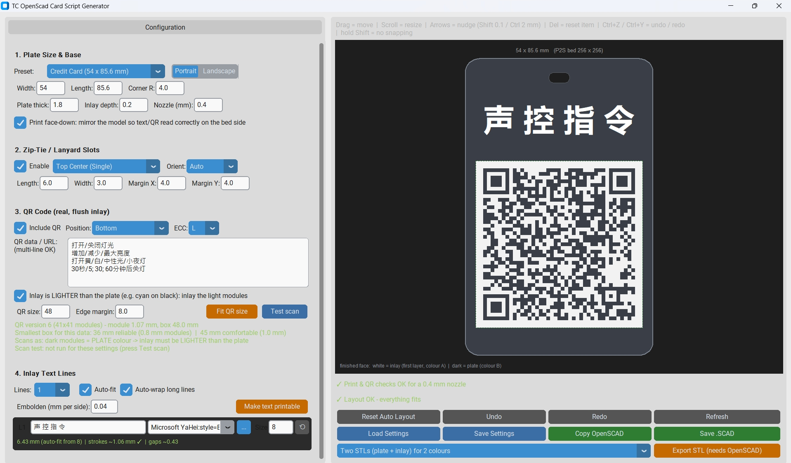

🏷️ TC OpenSCAD Card Script Generator
Interactive Python desktop designer for printable cards, event badges, asset tags, and lanyard badges. Engineered for two-colour flush inlays on Bambu Lab 3D printers (P2S / AMS, 256 × 256 mm bed).
Generates production-ready OpenSCAD scripts with auto-fitted text metrics, zip-tie lanyard slots, and camera-scannable QR codes.

✨ Core Capabilities
- Flush Inlay Architecture: Text and QR code form the first layer (0.20 mm), printed face-down on the build plate in Colour A, while the structural card body forms Colour B. The result is a smooth, perfectly flat surface without raised text edges.
- Nozzle-Aware Verification: Automatically evaluates stroke widths and clearances against a standard 0.4 mm nozzle to prevent unprintable text or unreadable QR modules.
- Simulated Optical Scanner: An integrated computer-vision model verifies whether your printed QR code will decode reliably under real-world camera conditions.
- True-Type Font Layout: Automatic line-wrapping, font metrics calculations, and per-glyph stroke emboldening.
- One-Click Multi-STL Export: Connects directly with the OpenSCAD CLI to export aligned
_1_inlay.stland_2_plate.stldual-part files, ready for Bambu Studio.
📦 Prerequisites & Installation
1. OpenSCAD (required for rendering & STL export)
To preview geometry or use the one-click dual-part STL export, OpenSCAD must be installed on your system.
- Download: openscad.org/downloads.html
- Windows: Default install paths (e.g.
C:\Program Files\OpenSCAD\openscad.exe) are auto-detected, or you can point to it manually via the file picker if prompted. - macOS / Linux: Ensure
openscadis in your/Applicationsfolder or accessible via systemPATH.
2. Python Dependencies (Python 3.9+)
Install the required packages using pip:
# Core requirements (GUI, QR generation, image metrics)
pip install customtkinter pillow qrcode
# Optional: required for simulated camera scan testing
pip install opencv-python-headless numpy💛 Support the Project
If this utility streamlined your multi-colour 3D printing workflow, consider dropping a tip on Ko-fi!
Buy Me a Coffee ☕Note for Malaysian supporters 🇲🇾
For supporters in Malaysia who asked about local transfers, feel free to use the DuitNow QR.

Thank you!